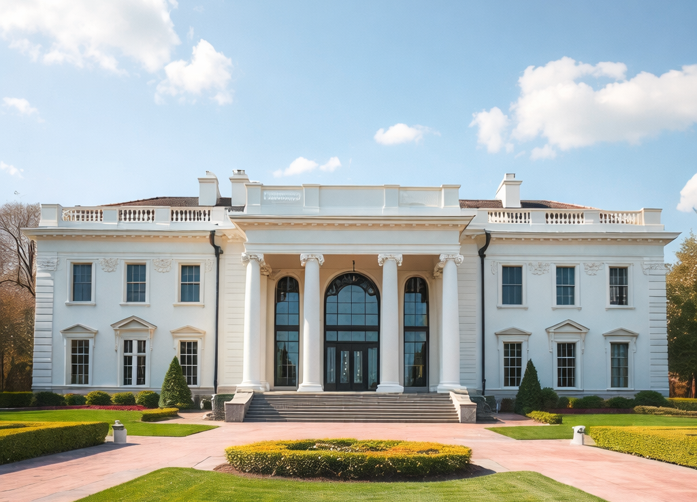
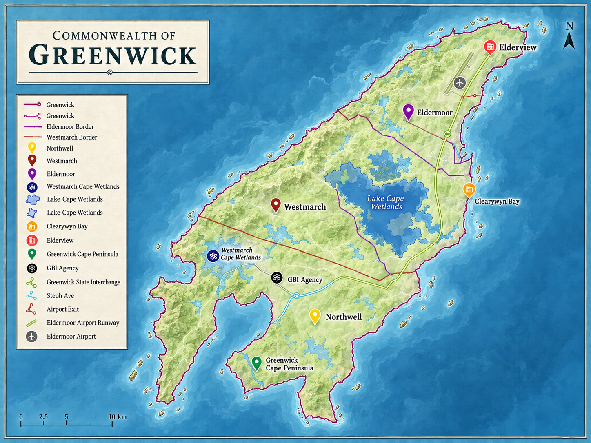

Parliament of the Commonwealth of Greenwick
Democracy.
Tradition.
Public service.
The official parliamentary portal for legislation, representatives, national institutions and the Crown.
 Unity · Strength · Sovereignty
Unity · Strength · SovereigntyParliament at a glance
Serving a nation of more than 14,000 citizens.
Greenwick is a constitutional monarchy with parliamentary democracy. Its Parliament consists of 43 seats, with elected representatives serving constituencies across the Commonwealth.
About the Commonwealth →National leadership
Government and Crown
Head of Government
Hon Sean Mannix MP
Sixth Prime Minister of the Commonwealth of Greenwick and leader of the Teal Conservative Party.
Office of the Prime Minister →
Head of State
His Majesty King Ashton I
Founding monarch and ceremonial Head of State, representing national unity, continuity and constitutional tradition.
About the Monarch →Work of Parliament
Open records. Clear process.
Explore how bills become law, review voting records, follow parliamentary sessions, and understand elections and referendums.
The Commonwealth
Explore Greenwick
View the national map, states, capital, wetlands, transport routes and key national locations.
Open national map
Information & services